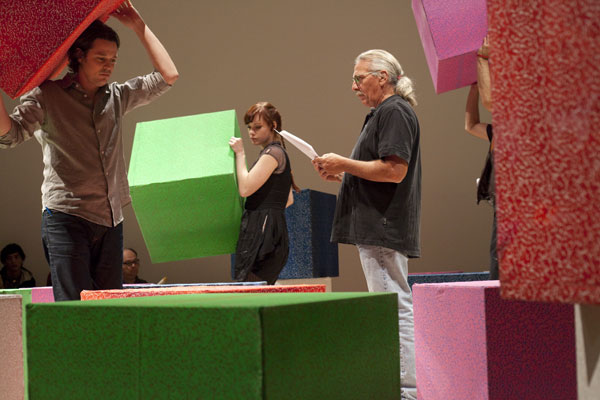

-
Brody Condon at the New Museum
by Stephen Squibb December 8, 2009
The fetishist is doomed to mistake a part of something for the whole. Thus, for example, a foot fetishist treats a foot the way another might the entire body. The techno-fetishist, for their part, takes technology for the whole of the social order, a step we typically identify with a certain optimism, even utopianism – as in the case of Marshall McLuhan or Isaac Asimov. Cyberpunk, however, was the same techno-fetishist gesture in the opposite direction, presenting a social landscape destroyed by the aggressive proliferation and hybridization of technological evolution. In the case of the genre’s archetypal text, William Gibson’s Neuromancer, technology is first and foremost engaged in exploding the category of addiction, sentencing the body to a dependence on the products of an ever-more restless and creative mind.
The characters’ confinement to their heavily augmented physical selves is juxtaposed against their ability to ‘jack in’ to cyberspace, a sort of astral projection famously described by Gibson as:
A consensual hallucination experienced daily by billions of operators, in every nation… A graphic representation of data abstracted from banks of every computer in the human system. Unthinkable complexity. Lines of light ranged in the nonspace of the mind, clusters and constellations of data. Like city lights, receding.
At the beginning of the book, our anti-hero, Case, has been cut off from cyberspace – his body made incompatible – as punishment for sins against a past employer. Brody Condon, (who, full disclosure, is a friend) in his recent staged reading of the novel at the New Museum, effected a similar isolation for his audience. Each time Case, read by Condon’s stepfather Ray ‘Bad Rad’ Radke, would jack in (his prohibition is lifted early in the narrative, though threatens to return) a twenty-two piece gamelan band, situated between the audience and the actors, began to play. At the same time several large, colored cubes were moved around the playing space in what the artist has described as a ‘parody of this idea of a space where we would fly through information.’
The experience of watching these transitions was a delightful absurdity. It was quite impossible to hear the text over the gamelan, and we were left regarding actors stuck in a strange tableau, surrounded by slow moving colored cubes. It effectively conjured the feeling of outdated special effects; indeed, Condon has approvingly quoted Bruce Sterling, another cyberpunk originator, as saying “the idea that the virtual is somehow philosophically separate from the actual, it’s a period notion. It’s done.”
Condon’s recent work has displayed a rigorous fascination with role-playing, performance and identity. At its most successful, as in Without Sun, and Twentyfivefold Manifestation, this work cracks open the process of projection by which we identify and inhabit a given state, laying out, as if in inventory, the constitutive moments that add up to the assumption of this or that identity. In Without Sun, the goal is a sort of performative surgery – the disentangling of voice and movement so that each might be experienced with a degree of separation. Twentyfivefold Manifestation, on the other hand, channels Bruce Nauman in its positing, as a sort of experimental hypothesis, a specific, mystical relationship between art and its public. By adding eighty, live action art worshippers to the Sonsbeek International public sculpture exhibition in the Netherlands, Condon transformed the space into a vivid exploration of two different roles for art’s audience and even, in some cases, set them against each other; as when the LARPers chased off visitors from their respective fetish objects.
Case continues this trend, only this time the role under examination is Condon’s own. The artist has presented a startling cartography of the encounter between an early, formative experience –his receiving a copy of Neuromancer from his stepfather – and his own artistic process. Foregrounding his own position as artist throughout the performance by directing the actors, moving the cubes, announcing the breaks, and conferring with his collaborators, Condon has quite literally broken down, piece by piece. his own role for the audience to examine.
Consider the casting of Radke to play Case. On one level the parallels are quite straightforward, both men are in recovery, both are former hellraisers, etc. But on another level, Condon’s own invitation to Radke to step back into the world of Neuromancer, and the noisy, constructed cyberspace he has devised, offers a distinct analogy to the role of the Wintermute -the narrative’s semi-omnipotent artificial intelligence – in allowing Case back into cyberspace. In this way, Condon is dramatizing the artist’s relationship to personal history, offering himself as analogous to the puppet-master AI, standing simultaneously inside and outside his own story, manipulating memories, and creating the conditions by which an old vision of the future takes place a second time.
The separation implied by Sterling’s ‘period notion’ of virtual cyberspace is itself as mythical as the artificial intelligence whose inhuman laughter inhabits it. Certainly the gamelan ensemble is there to underline Gibson’s archaic, exotic rendering, but the parody, by dint of the performance, extends to encompass the artistic process itself. Gamelan, which is of profound importance in Javanese rituals, sets off not only Gibson’s cyberspace as mythical, but Condon’s performance of art-making as well, as he slyly lampoons his own confessed obsessions with transcendence and projection.
The point is thus not simply that there is now enough distance between us and Neuromancer that we can recognize its wanton myth-trafficking. Nor is it that art-making amounts to little more than mythologizing one’s personal history, with the artist acting as a sort of all-powerful artificial or inhuman intelligence vis-à-vis his or her own unique experience. (again: revealing mystic truths) It is rather that, for an artist, like Condon, coming to consciousness in the early eighties via texts like Neuromancer and performance works like those of Ann Hamilton, there is a distinct congruence between the techno-fetishism that produced Gibson’s vision of cyberspace, and the body-fetishism behind performance-based artistic production. Both aimed at a certain transcendence and trafficked in a certain faith, and both were formative in creating the artistic identity that Case so effectively interrogates.
In dialogue with Performa’s thematic Futurism, Condon’s Case appears as a ritualized performance of longing for a certain, adolescent idea of things to come. Its a bittersweet nostalgia, one aimed as much at performance itself, as it is at the transcendent space of a more broken future.

{kind=link}
{kind=link}
{kind=link}
{kind=link}